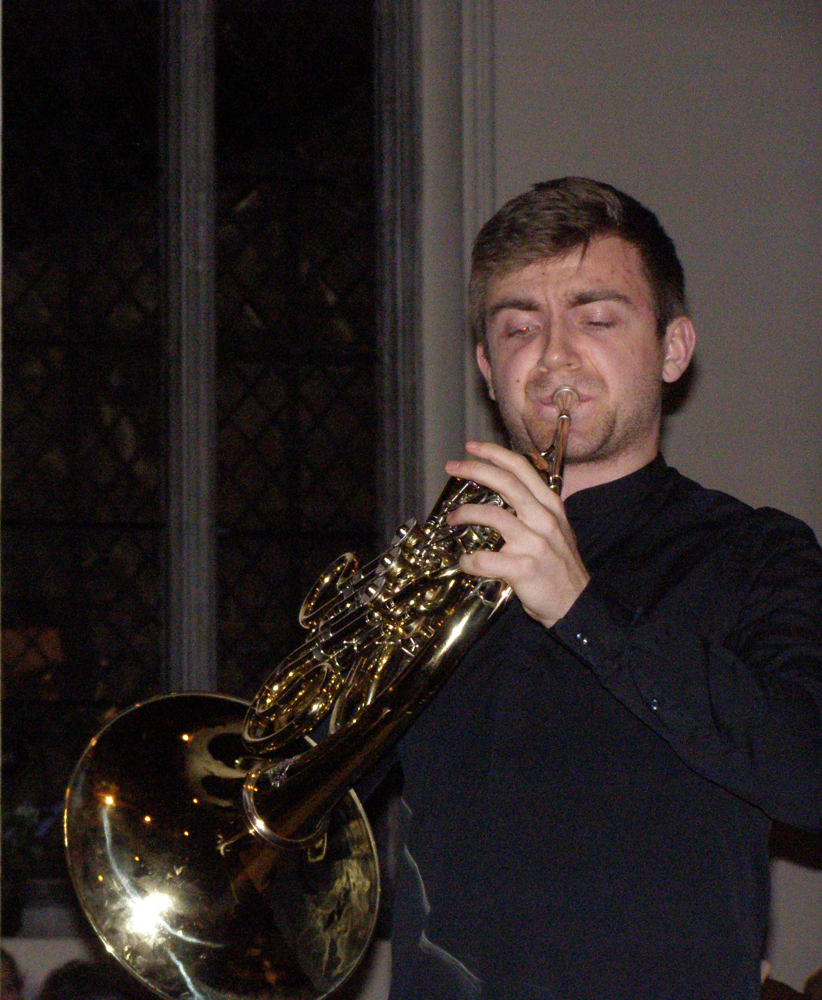

Ben Goldscheider

Since reaching the Final of the BBC Young Musician Competition in 2016, Ben has made his concerto debut at venues including the Berlin Philharmonie, KKL Lucerne, Barbican and the Royal Albert Hall, appearing as soloist with the BBC Symphony, Lucerne Symphony and Aurora Orchestras, among others. He releases his debut CD with Willowhayne Records, including works by Schumann, York Bowen and Esa-Pekka Salonen, in early 2018.
Ben is the only student of Radek Baborák at the Barenboim-Said Academy in Berlin, following studies with Susan Dent at the Royal College of Music Junior Department and as a Jungstudent with Marie-Luise Neunecker at the Hochschule für Musik ‘Hanns Eisler Berlin’. This season he gives recitals at festivals and venues throughout the UK and further afield, and performs concertos by Pauer, Penderecki, Bowen, Telemann, Weber and Mozart. A committed chamber musician, he joins Julian Prégardien and Christoph Schnackertz as part of the main series at Wigmore Hall, Daniel Barenboim and Michael Barenboim to perform Alexander Goehr’s Horn Trio in the Pierre Boulez Saal, and Sergei Babayan at the Verbier Festival. Ben collaborates regularly with musicians including Richard Uttley, Callum Smart, Denis Kozhukhin and Giuseppe Guarrera. Sought-after as an orchestral player, Ben has performed as guest with the Staatskapelle Berlin, Philharmonia, English Chamber and West-Eastern Divan Orchestras.
Ben has been invited to participate in the International Music Academy for Soloists (Bückeburg Palace, Germany) and the International Summer Academy for Wind Soloists (Payerbach, Austria). Prizes include the 2016 Philip Jones Memorial Prize at the Royal Overseas League Annual Music Competition and the Cox Memorial Prize and Audience Prize at the Eastbourne Symphony Orchestra Young Soloist Competition. In 2012, he was the youngest participant in the London Symphony Orchestra Brass Academy, and as principal horn of the National Youth Orchestra of Great Britain, he was awarded the John Fletcher Brass Prize for his contribution to the orchestra.
Ben has performed live on BBC Radio 3 In Tune, and was recently interviewed for a special feature in the Mail on Sunday. He is grateful for guidance and advice from Young Classical Artists Trust, and for awards from the Dorothy Croft Trust for Young Musicians, Awards for Young Musicians, June Emerson Wind Music and the EMI Music Sound Foundation.